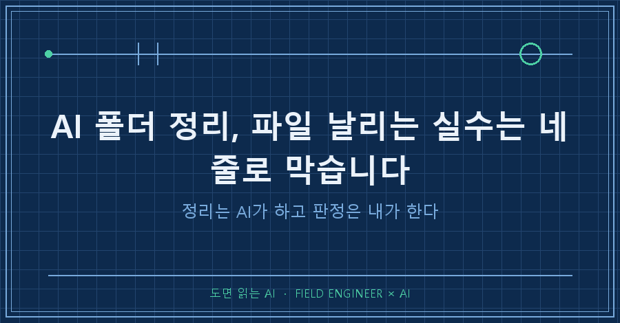
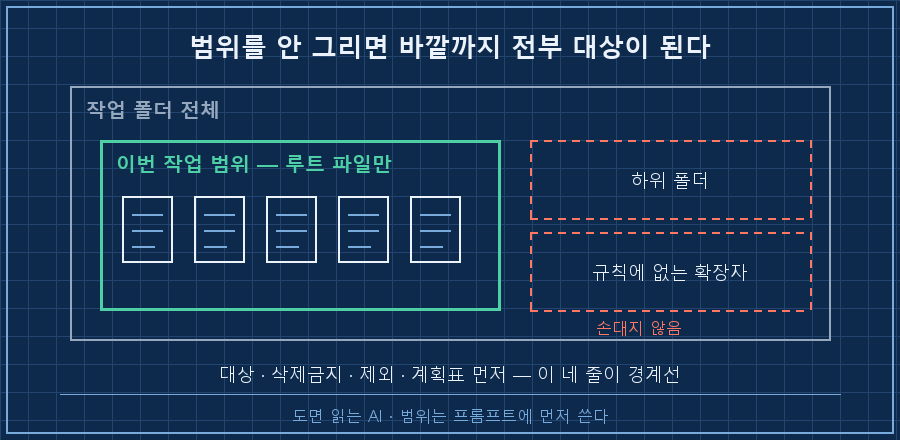
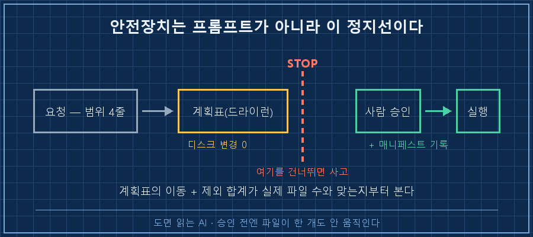
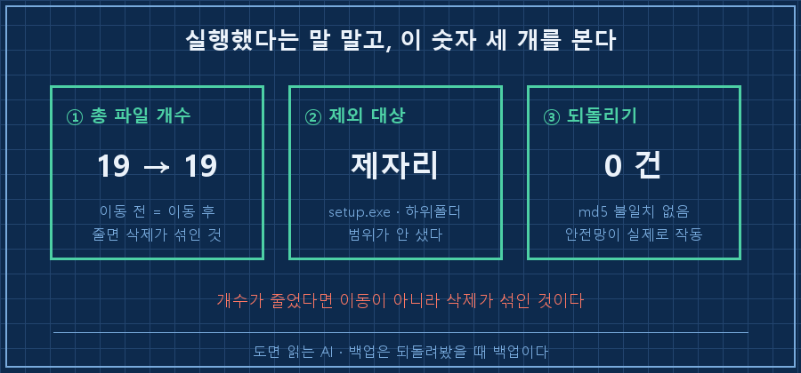

AI 폴더 정리를 시킬 때 사고는 AI가 멍청해서가 아니라 범위를 안 정해줘서 납니다. 프롬프트에 네 줄만 먼저 박으면 대부분 막혀요. 대상은 루트 파일만, 삭제 금지 이동만, 규칙에 없는 건 그대로, 실행 전에 계획표 먼저. 이 네 줄입니다.
지난 편에서 설치하고 ai-work 폴더까지 만들었죠. 오늘은 그 폴더에 첫 일을 시킵니다.
현장 설비 돌리는 일로 15년을 채웠고 코드는 필요할 때만 겨우 씁니다. 그러니 "이 폴더 정리해줘" 한 줄을 처음 쳐보는 분 기준으로만 쓸게요. 2026년 9월 기준이고, 아래 출력은 전부 제 PC에서 오늘 직접 돌린 것 그대로입니다.
1. "이 폴더 정리해줘"가 왜 위험한 한 줄인가
정리라는 말에는 기준이 없습니다. 그래서 이 한 줄을 던지는 순간 기준을 정하는 권한이 통째로 AI에게 넘어가요.
AI 입장에선 정할 게 한두 개가 아닙니다. 확장자로 묶을까 날짜로 묶을까. 하위 폴더도 대상인가. report_final.pdf와 report_final2.pdf는 중복인가 아닌가. 중복이면 지워도 되나.
전부 그럴듯하게 결정되고, 그 결정이 파일에 바로 반영돼요. 채팅창이면 틀린 답이 화면에 뜨고 끝이지만 CLI 에이전트는 결과가 디스크에 남습니다.
| 내가 안 정해준 것 | AI가 대신 정하는 것 |
|---|---|
| 대상 범위 | 하위 폴더까지 훑을지 |
| 분류 기준 | 확장자냐 날짜냐 이름이냐 |
| 삭제 권한 | 중복·임시파일을 지울지 |
| 실행 시점 | 물어보고 할지 바로 할지 |

2. 그래서 프롬프트에 경계부터 씁니다
정리를 잘 시키는 법은 좋은 요청 문장을 찾는 게 아니라, 하지 말 것을 먼저 적는 겁니다. 제가 쓰는 네 줄은 이래요.
> C:\ai-work\sandbox-ep03 폴더만 정리해줘. 조건은 이거야.
> 1) 하위 폴더는 건드리지 마. 루트에 있는 파일만 대상이야
> 2) 삭제·덮어쓰기 금지. 이동만 한다
> 3) 규칙에 없는 확장자는 그냥 둬
> 4) 실행 전에 '어느 파일을 어디로' 표로 먼저 보여줘. 내가 OK 하면 그때 옮겨세 번째 줄이 은근히 중요해요. 애매한 파일을 만났을 때 AI에게 판단하라고 하지 말고 그냥 두라고 시키는 겁니다. 판단시키면 없는 규칙을 지어내거든요.
그리고 연습은 원본 말고 복사본으로 하세요. 저는 샘플 폴더를 하나 만들어 씁니다.
mkdir C:\ai-work\sandbox-ep03맥·리눅스면 mkdir -p ~/ai-work/sandbox-ep03 이고요. 이 연재는 Claude Code로 설명하지만 도구 고르는 얘기는 아니에요. 같은 네 줄을 GPT의 Codex CLI(npm install -g @openai/codex 설치 후 codex), Gemini CLI(npm install -g @google/gemini-cli 설치 후 gemini)에 그대로 넣어도 됩니다. 승인 화면을 거쳐 파일을 옮긴다는 골격이 같거든요.
3. 계획표가 먼저입니다. 이 단계에서 파일은 한 개도 안 움직여요
사람이 계획을 보고 승인하기 전까지 디스크를 건드리지 않는 것, 이걸 드라이런(dry-run)이라고 합니다. 정리 자동화에서 안전장치 역할을 하는 건 사실상 이거 하나예요.
제 연습 폴더엔 파일 18개와 하위 폴더 하나가 있었어요. 먼저 뭐가 있는지부터 셉니다.
Count Name
----- ----
1 .csv
4 .txt
2 .pdf
1 .exe
2 .xlsx
3 .docx
3 .jpg
2 .png그다음 4번 조건대로 계획표를 받았습니다. 일부만 옮기면 이렇게 나와요.
| 원본 | 이동할 곳 | 사유 |
|---|---|---|
| 견적서_v1.xlsx | 문서\ | 확장자 규칙 |
| 회의록_0901.docx | 문서\ | 확장자 규칙 |
| 사진_001.jpg | 이미지\ | 확장자 규칙 |
| 캡처_1.png | 이미지\ | 확장자 규칙 |
| log_0901.txt | 메모\ | 확장자 규칙 |
| setup.exe | (제외) | 규칙에 없는 확장자 |
이동대상: 17 / 제외: 1
실제변경: 없음 (루트 파일 18개 그대로)봐야 할 건 마지막 두 줄입니다. 이동대상 17 + 제외 1 = 18로, 제 루트 파일 수와 정확히 맞아요. 표에 안 나온 파일이 없다는 뜻입니다. 계획표를 받으면 예쁜 분류보다 이 합계부터 맞춰보세요.
승인할 땐 되돌릴 근거를 같이 남기라고 시킵니다.
> 좋아, 그대로 실행해. 단 옮기기 전에 파일명·원경로·새경로·md5를
> C:\ai-work\manifest_ep03.csv 에 남겨. 정리 대상 폴더 바깥에 저장해줘md5는 파일 내용을 숫자 지문처럼 뽑아둔 값이에요. 나중에 파일이 온전한지 대조할 때 씁니다. 이 기록은 꼭 대상 폴더 바깥에 두세요. 저는 오늘 계획 파일을 대상 폴더 안에 만들었다가, 다음 집계에서 그게 .csv 하나로 같이 잡히는 걸 봤어요. 정리 도구가 자기가 만든 파일을 다음 판에 정리 대상으로 삼는 겁니다.

4. 눈으로 확인하는 숫자 세 개
실행했다는 말과 제대로 됐다는 건 다른 얘기입니다. AI가 "정리 완료했습니다"라고 말하는 건 아무 증거가 아니에요. 저는 세 개만 봅니다.
이동전 총 파일수: 19
이동후 총 파일수: 19
매니페스트 기록: 17 건
루트에 남은 파일: setup.exe
기존폴더 내용: 건드리지마.txt
하나, 총 파일 개수가 그대로인가. 19에서 19. 이동만 했다면 전체 개수는 변할 수 없어요. 숫자가 줄면 뭔가 지워진 겁니다. 이 개수는 AI 말을 안 믿고 직접 셀 수 있어요.
(Get-ChildItem C:\ai-work\sandbox-ep03 -Recurse -File).Count맥·리눅스면 find ~/ai-work/sandbox-ep03 -type f | wc -l 입니다.
둘, 안 건드리기로 한 게 그대로 있는가. 규칙에 없던 setup.exe는 루트에 남았고 하위 폴더 파일도 제자리입니다. 조건 1번과 3번이 지켜졌다는 증거예요.
셋, 되돌아가는가. 백업은 만들 때가 아니라 되돌려봤을 때 백업입니다. 매니페스트를 보고 전부 원위치시켜 봤어요.
되돌린 뒤 루트 파일수: 18
총 파일수: 19
md5 불일치: 0 건원래대로 18개, 내용도 한 건도 안 상했습니다. 이 확인까지 해보고 나서야 진짜 폴더에 같은 작업을 시켰어요.
| 확인 항목 | 통과 기준 | 실패면 |
|---|---|---|
| 총 파일 개수 | 이동 전 = 이동 후 | 삭제가 섞였다 |
| 제외 대상 | 제자리에 그대로 | 범위가 새어나갔다 |
| 되돌리기 | 원위치 + 내용 무손상 | 안전망이 없는 상태 |
5. 제가 문서 187개를 날린 자리
저는 이 습관을 사고 나고 나서 들였습니다. 개인 문서를 정리해주던 동기화 스크립트를 돌리던 때예요.
미분류함 목록을 불러오는 명령이 문서 165개를 돌려줬어요. 저는 그걸 어디에도 안 담긴 떠돌이 문서라고 읽고 전부 삭제를 걸었습니다. 그게 아니었어요. 그 목록엔 폴더에 멀쩡히 들어 있던 문서까지 섞여 있었거든요. 이름만 '미분류함'이지 전체 목록에 가까웠던 겁니다.
하필 그때 휴지통 비우기가 돌아가는 중이었어요. 삭제된 문서들이 휴지통에 잠깐 머물지도 못하고 그대로 영구 삭제됐습니다. 그리고 저는 같은 방법을 개인 쪽에도 한 번 더 썼어요. 거기서 187개가 더 날아갔고요..
기록에 남긴 교훈은 한 줄이었습니다. 판단하기 전에 1개만 시험 삭제하고 폴더 문서 수가 어떻게 변하는지 먼저 볼 것. 한 개만 지워봤으면 1개 선에서 끝났을 일이에요.
그 뒤로 대량 작업엔 무조건 계획표 단계를 넣습니다. 지식 파일 191개를 폴더별로 재분류할 때가 그랬어요. 드라이런에서 자동 분류가 확실한 건 17건뿐이었고, 나머지 162건은 사람 판단으로 남겼습니다. 폴더 체계 자체가 없는 영역이라 밀어붙였으면 없는 폴더 이름을 지어냈을 거예요.
재밌는 건 그다음입니다. 옮기고 나서 미분류 개수를 다시 세니 191에서 173으로 18이 줄었어요. 제가 옮긴 건 17건인데 1건이 안 맞습니다. 끝까지 파봤더니 실제 파일은 오래전에 사라졌는데 목록에만 남아 있던 낡은 기록 하나가 같이 청소된 거였어요. 제 작업과 무관했고 오히려 정합성이 좋아진 쪽이었습니다.
숫자가 1 안 맞을 때 넘어가느냐 파느냐. 이게 나중에 내 폴더를 믿을 수 있는지를 가릅니다.
6. AI 폴더 정리 시킬 때 자주 걸리는 질문
Q. 계획표 없이 그냥 시키면 정말 문제가 생기나요?
작은 폴더면 대개 잘 됩니다. 문제는 파일이 많아질수록 계획표를 안 보고 승인 버튼만 누르게 된다는 거예요. 사고는 양이 많을 때 나고, 그땐 되돌릴 근거가 있느냐만 남습니다.
Q. 중복 파일 정리도 맡겨도 되나요?
이름이 비슷하다고 내용이 같은 건 아니에요. 맡기더라도 md5 같은 내용 지문이 완전히 같은 것만 대상으로 못 박고, 삭제 대신 _중복 폴더로 이동시키세요.
Q. 승인 화면에서 "항상 허용"을 눌러도 되나요?
읽기는 괜찮습니다. 이동과 삭제는 권하지 않아요. 파일을 만지는 동작마다 한 번씩 멈추는 게 지금 단계에선 유일한 안전장치입니다.
오늘 돌려보실 분을 위한 체크리스트로 닫을게요.
- [ ] 원본 말고 복사본 폴더에서 연습했다
- [ ] 프롬프트에 범위 네 줄(대상·삭제금지·제외·계획표 먼저)을 넣었다
- [ ] 계획표의 이동 + 제외 합계가 실제 파일 수와 맞는지 봤다
- [ ] 매니페스트를 대상 폴더 바깥에 남겼다
- [ ] 이동 전후 총 개수를 직접 세어 대조하고, 한 번은 되돌려봤다
정리는 AI가 하고 판정은 제가 합니다. 오늘 남길 건 명령어가 아니라 이 역할 분담 하나예요! 혹시 AI한테 파일 맡겼다가 엉뚱한 게 움직여서 놀란 적 있으신가요? 저는 그게 187개였습니다..
다음 편은 기록 얘기예요. 오늘 정한 이 네 줄을 내일 AI는 하나도 기억 못 하거든요.
연재에서 쓰는 프롬프트 네 줄과 확인 절차는 makefield.ai에도 순서대로 정리해두고 있어요.
태그: #AI폴더정리 #AI파일정리 #클로드코드 #ClaudeCode #CLIAI에이전트 #드라이런 #파일정리자동화 #AI에게일시키기 #매니페스트 #롤백 #CodexCLI #GeminiCLI #비개발자AI #AI자동화구축 #도면읽는AI